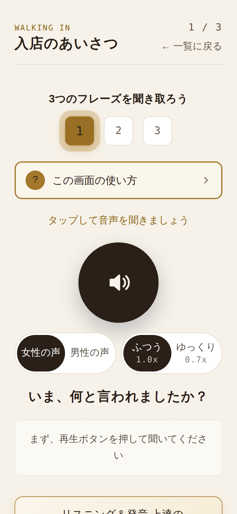

北米のカフェやファーストフードで店員さんが言うことは、だいたい決まっています。何を言われるかを先に知って、耳を慣らしておきましょう。

"What can I get for you?" は、実際には「わっけなぃ」のように一息で飛んできます。"Anything else?" も "For here or to go?" も同じです。知っているはずの単語なのに、耳ではまったく別の音に聞こえる。
聞き返すのが申し訳なくて、とりあえず頷いてしまう。頼んだつもりのないものが出てくる。英語力の問題ではなく、その音を聞いたことがないだけです。
聞く前に選択肢が見えていると、読んで当ててしまいます。それでは耳が育ちません。このアプリは、一度でも音を再生するまで選択肢を伏せます。
同じ場面でも言い方はいろいろです。「注文を聞かれる」だけで4通り。どれが来ても分かるように耳を慣らします。
日本語の3択で答えます。間違えた問題には★が付いて、あとから優先して復習できます。
自分の答え方を選んで、お手本を聞いて、マイクに向かって言ってみます。聞こえたとおりの文字が返ってきます。
場面をバラバラに覚えるのではなく、実際の順番どおりに練習します。今どこにいるかが分かるので、迷いません。
この7つで、スタッフの英語29フレーズと、自分の答え29フレーズ。
まず カフェ & ファーストフード の7つを進みます。レストラン編（席に着いて注文して、食べた後で払うお店）は準備中です。
同じ文でも話す人が変われば聞こえ方が変わります。両方の声で確かめられます。
まず自然な速さで。聞き取れなければゆっくりに落として、音のつながりを1つずつ確かめます。
なぜそう聞こえるのかを、フレーズごとに説明します。単語の中の音と、単語と単語の境目の音を分けて。
思い当たるものがあれば、そこから始めても大丈夫です。
聞き取れない日があってもいいんです。そのときに困らない言い方まで、一緒に練習します。
まもなく公開します